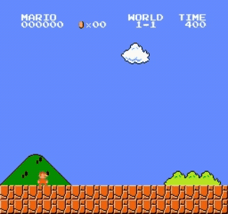
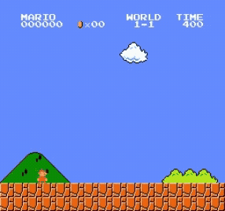
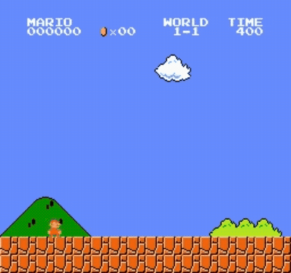
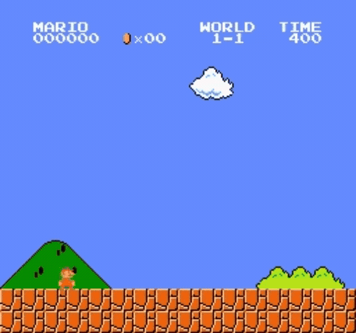
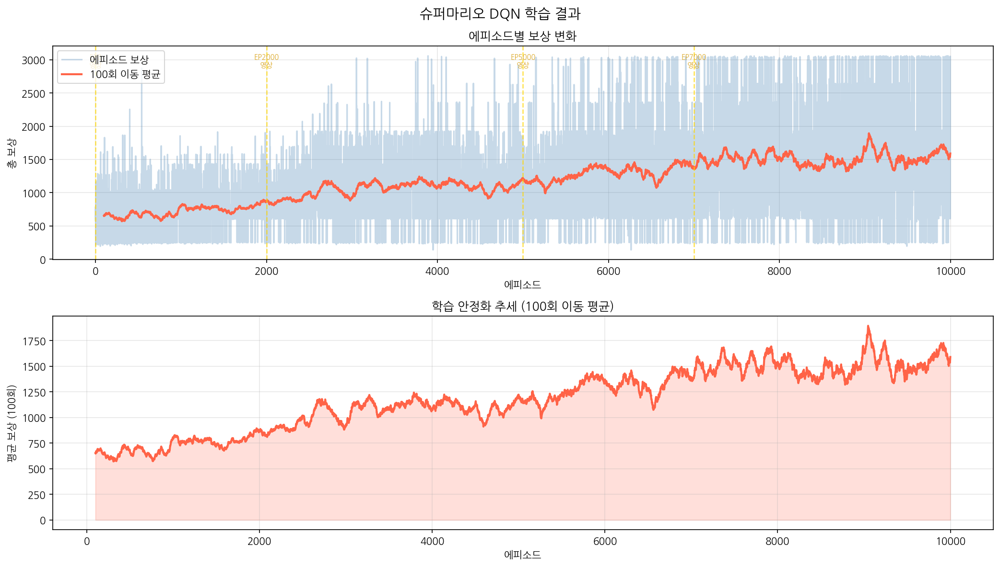

게임 규칙을 하나도 알려주지 않고, 84×84 흑백 픽셀과 보상 신호만으로 슈퍼마리오 1-1 스테이지를 클리어하는 에이전트를 학습했습니다. 완전 무작위 행동에서 출발해 10,000 에피소드 만에 스테이지를 완주했습니다.
왼쪽은 학습을 시작하기 전(ε=1.0, 100% 무작위), 오른쪽은 10,000 에피소드 학습 후입니다. 같은 신경망이고 바뀐 것은 가중치뿐입니다.


지도학습은 정답 레이블이 있어야 학습합니다. 하지만 게임 플레이에는 "이 순간의 정답 행동"이라는 레이블이 없습니다. 강화학습은 그 대신 보상 신호로 학습하는데, 이게 실제로 작동하는지를 직접 확인해보고 싶었습니다.
슈퍼마리오를 고른 이유는 보상 구조가 명확하기 때문입니다 — 오른쪽으로 전진하면 양의 보상, 시간이 지나면 음의 보상, 죽으면 −25. 이 단순한 신호만으로 점프 타이밍이나 적 회피 같은 복합 행동이 창발하는지가 관심사였습니다.
제약을 하나 걸었습니다. 에이전트에게는 게임 내부 상태(마리오 좌표, 적 위치 등)를 주지 않고 사람이 보는 것과 같은 화면 픽셀만 입력으로 줍니다.
원본 화면은 240×256 RGB입니다. 이걸 그대로 쓰면 연산량이 크고, 무엇보다 정지 화면 한 장으로는 마리오가 점프 중인지 낙하 중인지 알 수 없습니다. 네 단계 전처리로 이 두 문제를 해결했습니다.
행동 공간은 SIMPLE_MOVEMENT 7개(오른쪽 이동·점프·달리기 조합 등)로 제한했습니다.
전체 버튼 조합을 다 열어두면 탐색 공간이 불필요하게 커지기 때문입니다.
DQN의 핵심은 "이 상태에서 각 행동이 얼마나 가치 있는가(Q값)"를 신경망이 추정하도록 학습시키는 것입니다. 그런데 학습에 쓰는 목표값 자체를 같은 신경망이 만들면 학습이 발산합니다. 이를 막는 두 장치가 Replay Buffer와 Target Network입니다.
입력 (4, 84, 84) # 4프레임 스택 흑백
Conv2d(4 → 32, k=8, s=4) + ReLU → (32, 20, 20)
Conv2d(32 → 64, k=4, s=2) + ReLU → (64, 9, 9)
Conv2d(64 → 64, k=3, s=1) + ReLU → (64, 7, 7)
Flatten → 3136
Linear(3136 → 512) + ReLU
Linear(512 → 7) # 행동별 Q값| 항목 | 값 | 역할 |
|---|---|---|
| 학습률 | 1e-4 | Adam 옵티마이저 |
| 할인율 γ | 0.9 | 미래 보상의 현재가치 비율 |
| ε (탐험률) | 1.0 → 0.1 | decay 0.99999 — 무작위에서 최적 행동으로 |
| 배치 크기 | 32 | 1회 학습에 쓰는 경험 수 |
| Replay Buffer | 50,000 | 경험 저장 상한 |
| Target 동기화 | 1,000 스텝 | 학습 안정화 주기 |
| Gradient Clipping | max_norm 10 | 기울기 폭발 방지 |
| 손실 함수 | SmoothL1 (Huber) | MSE보다 이상치에 강건 |


| 체크포인트 | 학습 스텝 | ε | 최근 100회 평균 보상 | 전체 최고 보상 |
|---|---|---|---|---|
| EP 0 | 0 | 1.0000 | 592.0 | 592.0 |
| EP 2,000 | 269,649 | 0.1000 | 860.7 | 2,874.0 |
| EP 5,000 | 686,248 | 0.1000 | 1,222.6 | 3,059.0 |
| EP 7,000 | 1,019,666 | 0.1000 | 1,387.2 | 3,059.0 |
| EP 10,000 | 1,593,659 | 0.1000 | 1,590.0 | 3,062.0 |

가장 눈에 띈 건 ε이 EP 2,000 이전(약 23만 스텝)에 이미 최솟값 0.1에 도달했다는 점입니다. 즉 전체 학습의 80% 이상이 탐험이 거의 없는 활용(exploitation) 구간이었습니다. 그럼에도 EP 2,000의 평균 보상 860에서 EP 10,000의 1,590까지 계속 올랐다는 건, 성능 향상이 새로운 탐험이 아니라 이미 모은 경험을 반복 학습하며 Q값 추정이 정교해진 결과라는 뜻입니다. Replay Buffer가 실제로 일하고 있었다는 근거로 읽었습니다.
또 하나는 개별 에피소드 보상의 분산이 끝까지 줄지 않았다는 점입니다. EP 10,000에서도 최소 보상은 233으로 초기와 비슷합니다. ε=0.1이 남아 있어 10% 확률의 무작위 행동이 낙사로 이어지는 경우가 계속 존재하기 때문입니다. "평균은 올랐지만 안정적으로 클리어하는 것은 아니다"가 정확한 표현입니다.
역설적이게도 DQN 알고리즘 자체보다 환경을 돌아가게 만드는 데 훨씬 오래 걸렸습니다.
gym-super-mario-bros는 오래된 라이브러리라 최신 numpy·gym과 충돌했고, 이를 해결하는 과정이 초반 작업의 대부분이었습니다.
Colab에서 학습을 시작하자마자 오류가 연쇄 발생했습니다.
AttributeError: module 'numpy' has no attribute 'bool8'
ValueError: not enough values to unpack (expected 5, got 4)세 오류의 뿌리가 모두 같았습니다 — 서드파티 라이브러리가 상위 의존성의 파괴적 변경을 따라가지 못한 것입니다.
np.bool8이 numpy 2.0에서 완전히 제거됐는데 nes-py·gym 내부가 이를 사용 중self.ram[x] * 256이 오버플로우TimeLimit은 5-tuple을 기대하지만 gym-super-mario-bros는 4-tuple 반환라이브러리를 포크해 고치는 대신, 설치 직후 런타임에 소스를 일괄 패치하는 방식을 택했습니다. Colab은 세션마다 환경이 초기화되므로 재현성이 더 중요하다고 판단했습니다.
# 1) 제거된 별칭 복원
if not hasattr(np, 'bool8'):
np.bool8 = np.bool_
# 2) 오버플로우 — 연산부에 int() 캐스팅 삽입
p1 = re.compile(r'(self\.ram\[[^\]]+\])\s*\*\s*(\d+)')
patched = p1.sub(lambda m: f'int({m.group(1)}) * {m.group(2)}', content)
# 3) 4-tuple / 5-tuple 양쪽 지원
result = self.env.step(action)
if len(result) == 4:
observation, reward, terminated, info = result
truncated = False
else:
observation, reward, terminated, truncated, info = result이 패치 코드를 colab/train.ipynb의 패키지 설치 직후 셀에 넣어, 새 세션에서도 자동 적용되게 했습니다.
오류 메시지 세 개가 서로 달라도 원인은 하나일 수 있습니다. 개별 증상을 각각 때우는 대신 "공통 원인이 뭔가"를 먼저 물은 것이 시간을 줄였습니다.
에피소드 영상을 저장한 뒤 재생하면 화면이 초록색 노이즈로 깨지거나 첫 프레임만 반복됐습니다. 학습은 정상이라 더 헷갈렸습니다.
nes-py의 render()는 내부 C++ 버퍼에 대한 참조를 반환합니다. 루프가 끝나고 env.close()가 호출되면 그 메모리가 해제되는데, 리스트에 담아둔 값들도 같은 메모리를 가리키고 있어 전부 무효화된 것이었습니다. 즉 영상 저장 시점에는 이미 프레임이 존재하지 않았습니다.
참조가 아니라 값을 복사해 독립적인 메모리를 확보했습니다.
- frames.append(frame) # 참조 저장 → close() 후 손상
+ frames.append(np.ascontiguousarray(frame, dtype=np.uint8))파이썬에서도 C 확장 라이브러리를 쓰면 메모리 수명을 직접 신경 써야 합니다. "값을 담았다"고 생각한 것이 사실은 참조였고, 이 구분이 버그의 전부였습니다.
nes-py 빌드 실패
error: command 'cmake' failed: No such file or directory
Building wheel for nes-py (pyproject.toml) ... errornes-py는 C++ NES 에뮬레이터를 포함해 cmake 빌드가 필요한데 Colab 기본 이미지에 cmake가 없었고, 최신 setuptools가 빌드 격리를 강제해 시스템 cmake를 찾지 못하는 문제가 겹쳐 있었습니다.
세 가지를 순서대로 적용해야 통과했습니다.
!apt-get install -y cmake # 빌드 도구 선설치
!pip install "setuptools>=65.5.1,<82" # 버전 고정
!pip install nes-py==8.2.1 --no-build-isolation # 격리 비활성화픽셀 입력과 보상 신호만으로 사전 지식 없이 스테이지를 완주하는 에이전트가 실제로 만들어진다는 것을 직접 확인한 경험이 가장 컸습니다. 특히 "적을 피해라"를 코딩한 적이 없는데 회피 행동이 학습 중반에 나타난 것이 인상적이었습니다.
1-1 스테이지 하나에만 학습된 에이전트입니다. 다른 스테이지에서는 동작을 보장할 수 없고, 일반화 성능은 검증하지 않았습니다. 또한 클리어가 매 시도마다 재현되는 것이 아니라 학습 후반의 일부 에피소드에서 달성된 결과입니다.